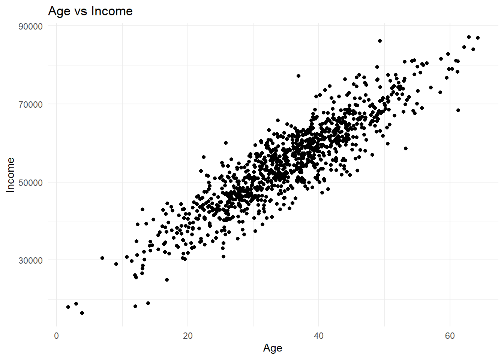
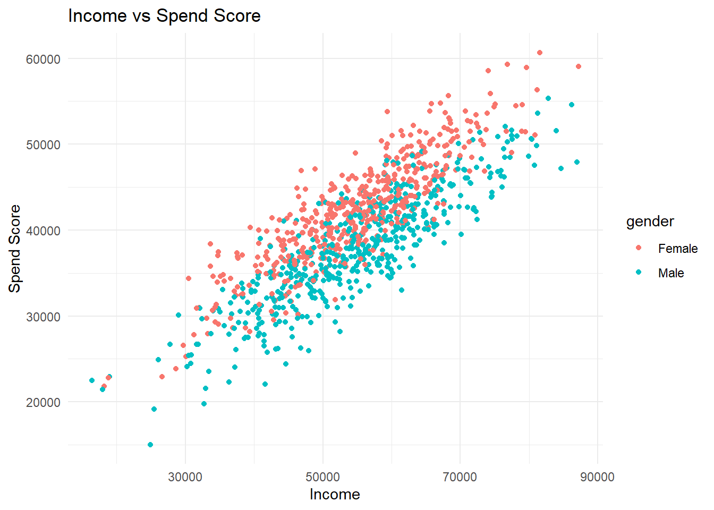
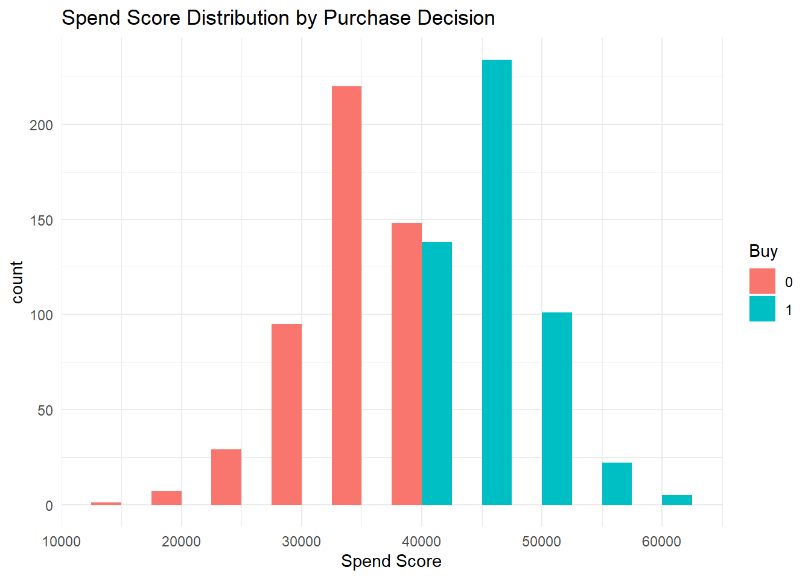

Write code that generates a synthetic dataset. This dataset should have multiple variables, and there should be some associations between variables.
Then write code that explores the data by making plots or tables to confirm that your synthetic data is what you expect it to be.
Then fit a few simple models to the data. For instance, use the lm or glm functions to fit a linear or logistic model. Make sure your model can recover the associations you built into the data. Explore if and how different models might be able to capture the patterns you see.
Take some inspiration from the examples shown in the Synthetic Data module.
Generating the Sysnthetic Dataset
# Load necessary librarieslibrary(ggplot2)
Warning: package 'ggplot2' was built under R version 4.3.3
library(dplyr)
Warning: package 'dplyr' was built under R version 4.3.3
Attaching package: 'dplyr'
The following objects are masked from 'package:stats':
filter, lag
The following objects are masked from 'package:base':
intersect, setdiff, setequal, union
# Set seed for reproducibilityset.seed(111)# Generate synthetic datasetn <-1000# number of obs the data hasage <-rnorm(n, mean =35, sd =10) #creating the age variable that picks from a random sample with a mean of 35 and sd of 10income <- age *1000+rnorm(n, mean =20000, sd =5000) #generates income variable that is a formula of age which adds a number from a random sample with a mean of 20000 and sd of 5000gender <-sample(c("Male", "Female"), n, replace =TRUE) # creates gender by randomly selecting Male or Femalespend_score <-0.5* income +ifelse(gender =="Male", 10000, 15000) +rnorm(n, mean =0, sd =3000) #creates a spending score variable that is influenced by income and genderbuy <-ifelse(spend_score >median(spend_score), 1, 0) #binary variable based on spend score# Create the data framedata <-data.frame(age, income, gender, spend_score, buy)# View the first few rows of the datasethead(data)
# Summary statisticssummary(data) # basic stats of variables
age income gender spend_score
Min. : 1.767 Min. :16458 Length:1000 Min. :15032
1st Qu.:28.463 1st Qu.:47160 Class :character 1st Qu.:35763
Median :35.197 Median :55208 Mode :character Median :40296
Mean :35.108 Mean :54797 Mean :40011
3rd Qu.:41.756 3rd Qu.:61953 3rd Qu.:44418
Max. :64.260 Max. :87198 Max. :60675
buy
Min. :0.0
1st Qu.:0.0
Median :0.5
Mean :0.5
3rd Qu.:1.0
Max. :1.0
# scatter plot of age and incomeggplot(data, aes(x = age, y = income)) +geom_point() +theme_minimal() +labs(title ="Age vs Income", x ="Age", y ="Income")

# scatter plot of income and spend_scoreggplot(data, aes(x = income, y = spend_score, color = gender)) +geom_point() +theme_minimal() +labs(title ="Income vs Spend Score", x ="Income", y ="Spend Score")

# bar plot of spend_scoreggplot(data, aes(x = spend_score, fill =as.factor(buy))) +geom_histogram(binwidth =5000, position ="dodge") +theme_minimal() +labs(title ="Spend Score Distribution by Purchase Decision", x ="Spend Score", fill ="Buy")

Regression models
# Fit a linear regression modellm_model <-lm(spend_score ~ income + age + gender, data = data)summary(lm_model)
Call:
lm(formula = spend_score ~ income + age + gender, data = data)
Residuals:
Min 1Q Median 3Q Max
-9238.4 -2097.3 -35.6 2222.7 9290.1
Coefficients:
Estimate Std. Error t value Pr(>|t|)
(Intercept) 1.506e+04 5.367e+02 28.054 <2e-16 ***
income 4.916e-01 2.014e-02 24.415 <2e-16 ***
age 6.854e+00 2.290e+01 0.299 0.765
genderMale -4.409e+03 1.978e+02 -22.295 <2e-16 ***
---
Signif. codes: 0 '***' 0.001 '**' 0.01 '*' 0.05 '.' 0.1 ' ' 1
Residual standard error: 3127 on 996 degrees of freedom
Multiple R-squared: 0.7873, Adjusted R-squared: 0.7866
F-statistic: 1229 on 3 and 996 DF, p-value: < 2.2e-16
# Fit a logistic regression modelglm_model <-glm(buy ~ spend_score + income + age + gender, family =binomial(link ="logit"), data = data)
Warning: glm.fit: algorithm did not converge
Warning: glm.fit: fitted probabilities numerically 0 or 1 occurred
summary(glm_model)
Call:
glm(formula = buy ~ spend_score + income + age + gender, family = binomial(link = "logit"),
data = data)
Coefficients:
Estimate Std. Error z value Pr(>|z|)
(Intercept) -1.547e+04 2.596e+05 -0.060 0.952
spend_score 3.810e-01 6.396e+00 0.060 0.953
income 4.995e-04 3.242e-01 0.002 0.999
age 2.630e+00 1.590e+02 0.017 0.987
genderMale -2.818e+01 5.405e+03 -0.005 0.996
(Dispersion parameter for binomial family taken to be 1)
Null deviance: 1.3863e+03 on 999 degrees of freedom
Residual deviance: 1.5808e-05 on 995 degrees of freedom
AIC: 10
Number of Fisher Scoring iterations: 25
First is the linear regression where spend_score is the dependent variable income, age, and genderMale are the independent variables. We see that the overall model is significant with a p-value < 0.05 and that 79% of the variation in the model can be explained by the predictor variables. We see that age is not significant at predicting spend_score but income and genderMale are significant and predicting spend_score.
The second model is a logistic model where we are predicting the binary buy variable with spend_score, income, age and genderMale as the independent variables. Each statistic represents the log odds of the variable so:
Spend Score Coefficient: The change in the log-odds of making a purchase for each one-unit increase in spend_score, holding other variables constant. Income Coefficient: The change in the log-odds of making a purchase for each one-unit increase in income, holding other variables constant. Age Coefficient: The change in the log-odds of making a purchase for each one-year increase in age, holding other variables constant. Gender Coefficient: The difference in the log-odds of making a purchase between Male and the reference gender (Female in this case), holding other variables constant.